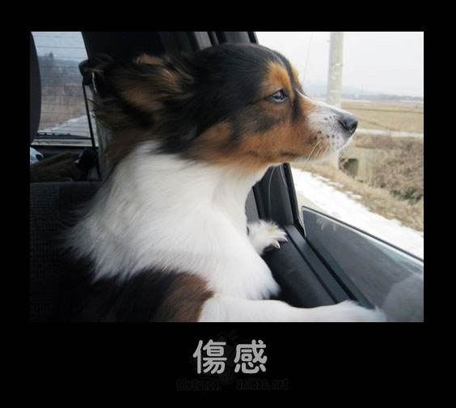
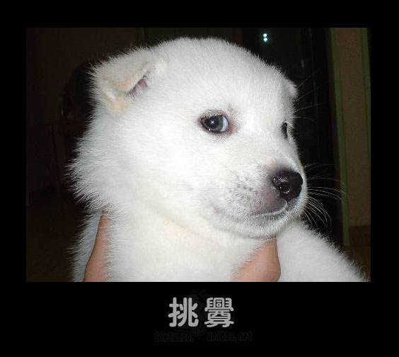

-

Snoop
Are you in the market for information? If so, then Snoop's the Bird for you! This Bird specialises at working undercover, discretely finding out whatever you need to know. Shhh… it's a secret, alright?
-
Snappy
Looking for a wedding photographer? Or perhaps you want a portrait of your adorable pooch, to decorate the mantelpiece! When it comes to photography, call Snappy.
-

Handy
Our Handy Bird loves the jobs you hate… from putting up shelves to fixing a leaky pipe, this Bird is the DIY master.
-

Blabber
Got a message that needs to be delivered? Or perhaps it's an urgent package you need sent. Blabber will get your mail to its recipient, faster than a speeding bullet. Well, almost.
-
Wordy
Wordy loves to talk. No matter whether you're writing an email, a website, your resignation note or your acceptance speech - this Bird always knows what to say!
-
Basher
When it comes to construction, Basher is the Bird for the job. From putting up fences and garden sheds, through to interior remodelling - this Bird just loves to build.
-
Splasher
Splasher is the expert when it comes to painting. From choosing the colours for your new nursery, through to exterior weather proofing treatments: this Bird was born with a brush in its hand!
-
Nerdy
The ultimate iBird, our Tinker has the know-how that most of us lack. If you find yourself baffled by technology, then join the club - and call on Tinker for all your IT needs.
-
Thinker
Out of all the Birds, Thinker is the brains of the operation. Need a cunning plan delivered in a flash? From business strategies through to first class excuses, Thinker has got a plan for every scenario.
-
Maestro
Maestro is no stranger to haute cuisine. From baking lessons through to full-scale catering operations, let Maestro cook you up a treat!
-
Super
Is it a Bird? Is it a… no hang on, it is a Bird. Our Super Bird offers the ultimate, all-in-one service. If you've got a unique problem that the other Birds can't fix, then Super is always ready to come to your rescue.
Thinker
Out of all the Birds, Thinker is the brains of the operation. Need a cunning plan delivered in a flash? From business strategies through to first class excuses, Thinker has got a plan for every scenario.